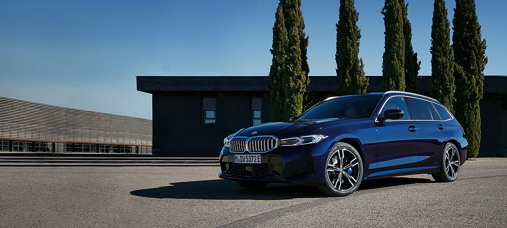
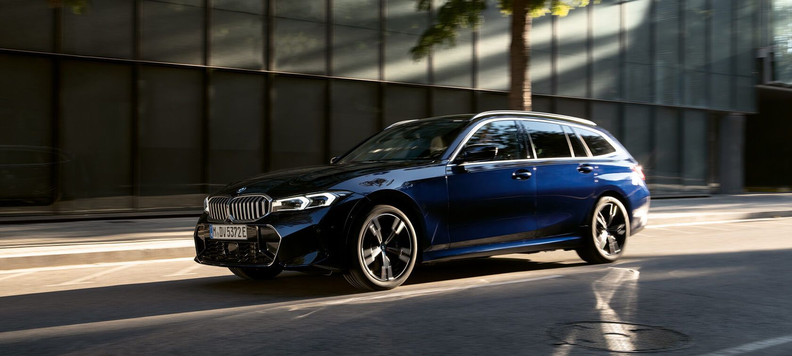

|  | ||||
| Motor ve Yakıt Tipi | Güç | 0-100KM | ||
| BENZİN | 245 bg | h:6 sn | ||
|
BMW 3 Serisi Touring, 500 litre hacme sahip bagaj bölümü sayesinde BMW Touring'den beklediğiniz esnekliği ve günlük kullanıma uygunluğu sürüş dinamiklerinden ödün vermeden akıllı teknolojiler ve kapsamlı bağlantı özellikleri ile bir araya getiriyor: |
|
|
BMW Touring:
|
|
BMW 3 SERİSİ TOURING'İN DİJİTAL TEKNOLOJİLERİ. |

|
BMW 3 Serisi Touring ile sunulan dijital teknolojiler otomobiliniz, siz ve çevreniz arasında akıllı bağlantı özellikleri sağlıyor:
|